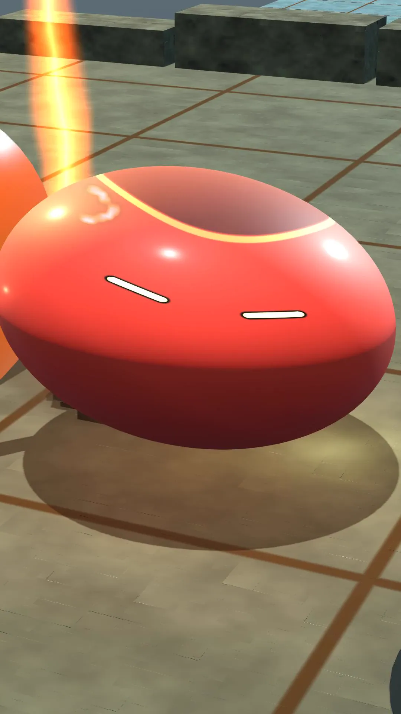

The development journal is live
This journal is now online. It brings together the latest development posts, milestone status and a readable summary of the design, so the progress of Orb Fighters is easier to follow on a phone.
The reference fight remains the first milestone. Work continues on readable contact shapes, expressive eyes and distinctive powers, alongside the connection between the playable controls and real duel outcomes.
The gallery is reserved for films that pass the full visual review. Component studies and input previews help development, but they will not be presented as approved fights or finished gameplay.
Inside the work
